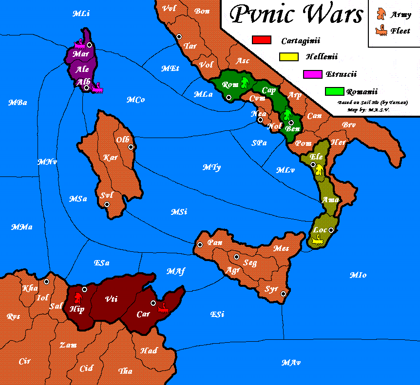
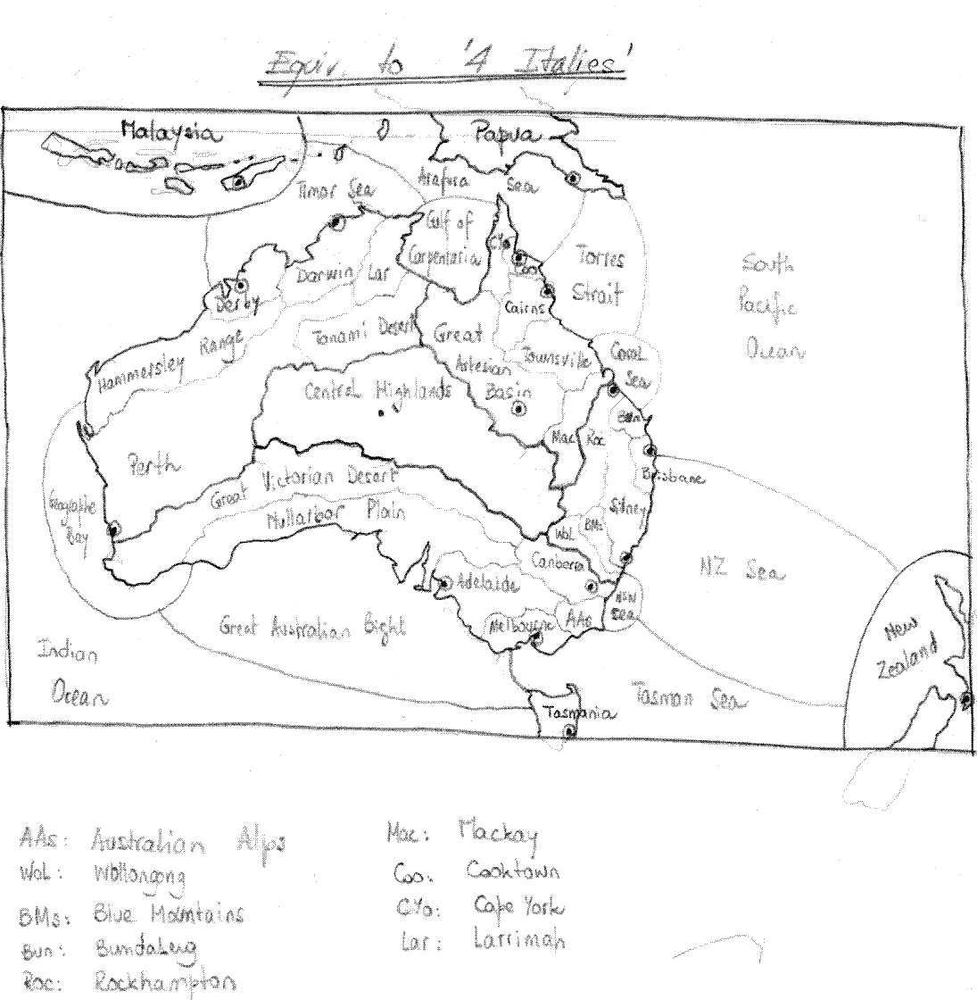

|
I am a frequent reader of the 'Zine, and I find especially interesting
those articles related to variants. However, I realized that I don't
get so interested on the variants themselves, but on their maps: from
the one in the Classical variant to those whose shape changes over
time (as in those where the water level increases and some land provinces
become sea spaces).
So that is why I decided to focus on them, rather than on creating
new variants.
Also, digging into the resources page of the Pouch, I found an excellent
programme that helps you create your own variant maps. The maps created
with it were not particularly attractive, but the underlying idea
of the software was: a map is simply a network of "nodes", where each
node is a land or sea space. This was what I needed to know in order
to engage in creating maps.
Why? Well, a usual problem with variants is that their "playability"
is not evident from the outset, and so a period of play-testing is
required. As I said, I am not so interested in creating new variants
as in creating new maps, and so I wanted to minimize the need of playtesting.
So, what should I do? I've always been a rather lazy boy, so I found
the optimal solution: create maps for already existing variants!
You are just thinking: "What? Why create a map for a variant that
already has one?!!" Well, the idea is not (as) stupid as it sounds.
What I thought is: there are several variants where their maps are
fantasy ones. I'm not saying they're not good maps, but I prefer those
based on historical or geographical grounds, as they lead (at least
in my case) to an extra involvement with the game: I find it more
amusing to be Attila the Hun or Napoleon than the commander of an
unheard of power on an unrecognizable planet.
So, what I needed to do was simply: 1. Find a variant with a fantasy
map, 2. Find a geographic area that could resemble it, 3. Find a period
where several warring parties fought in that area, and finally 4.
Draw the map (technically speaking, I am just drawing a new map that
is topologically identical to the original one).
I am not going to bore you with all the steps in each case. I am just
going to show you the maps I drew, and will mention the variant that
inspired me. I hope you like it.
Punic wars
Based on the Sail Ho! variant, the map shows the Italian peninsula,
Corsica, Sardinia, Sicily and the north of Africa. The four powers
are Romans, Etruscans, Carthaginians and Greeks (North, West, South
and East respectively).
I just renamed the land and sea spaces, and designed army and fleet
icons that reflect the period (circa 200 BC).
The good thing about this map is that the variant was playtested for
a long period, and it works well (the map is based on the revised
Sail Ho! map), so every strategic analysis of the Sail Ho! powers
is also applicable to the powers of Punic Wars

Australian diplomacy
Based on the "5 Italies" variant, the map shows Australia, New Zealand,
Tasmania, Malaysia and Papua-New Guinea. However, I reduced the number
of players to only four, that I named Tasmans (south), Kiwis (east),
Papuans (north) and Malays (west). I don't know much about Australian
history, so I invented the powers based only on geographical considerations.
As an a-priori assessment, and though not exactly identical to the
"5 Italies" variant, this map is "part of the family" of perfectly
balanced symmetric games.

I hope you enjoyed it, and let me know if you're using the maps!
[Editor's Note: We have included PDF's of these maps as well,
just click on the maps above and they will start to download.]
|